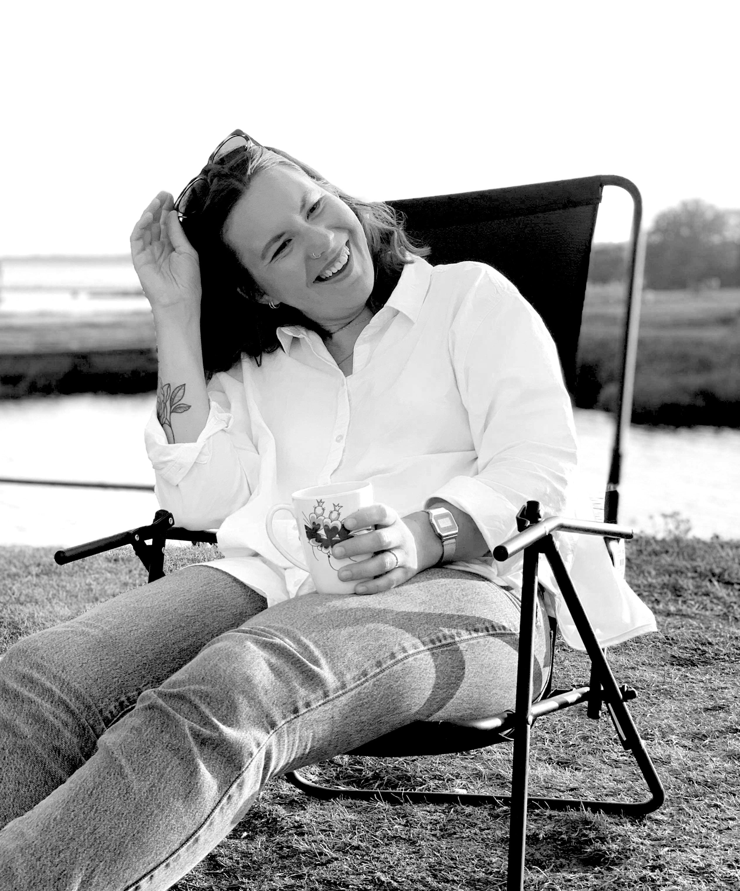

I have been interested in design and development in many different
ways since high school. I then completed my master's degree in 2020,
and I am currently expanding my knowledge further by studying Frontend development.
As a Frontend developer with a background in Interaction Design,
I strive to write scalable code and create interfaces that meet the users’ needs.
With my deep understanding of the design process, I can easily translate design sketches into finished technical solutions.
What I specifically love about UX design and web development is the ability to design and build useful products and services that can
inspire behavioral change.
I live in Malmö with my wife and our two small children. In my spare
time I like to meet with friends and family, play board games or find fun home decor at Facebook Marketplace.